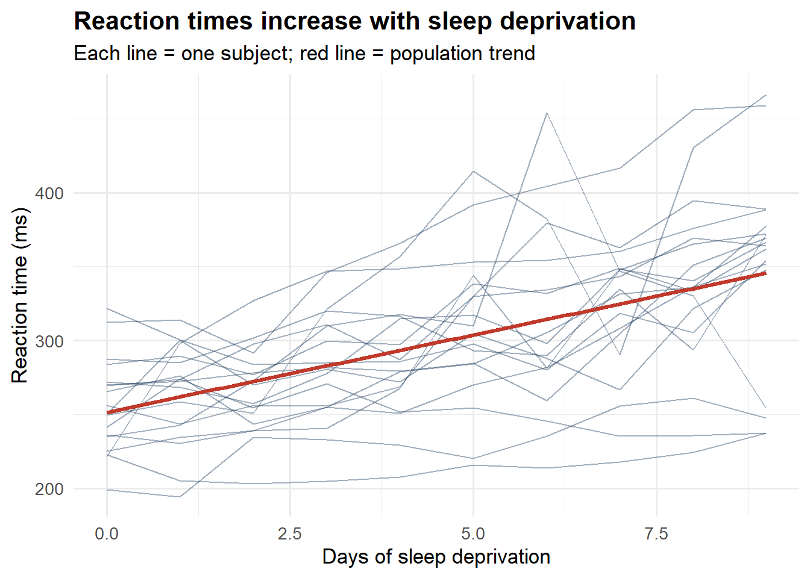
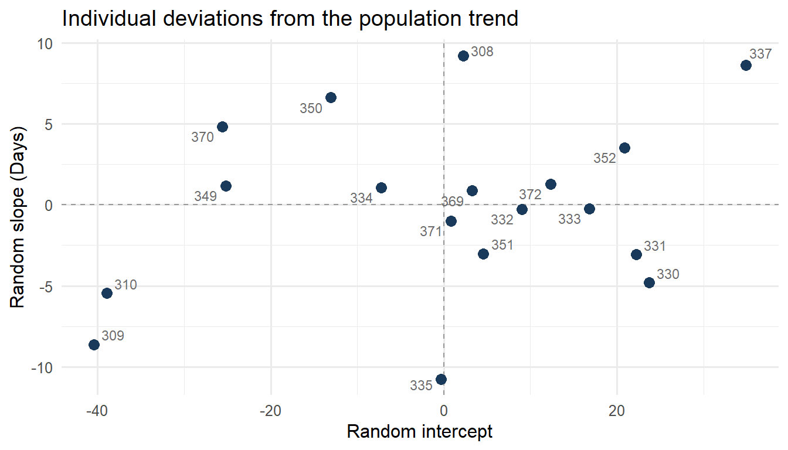

A walkthrough of fitting and interpreting random-effects models using lme4, with a real dataset example.
Published
June 10, 2025
Introduction
Multilevel models (also called mixed-effects or hierarchical models) are essential when your data have a grouped structure — students nested within schools, respondents nested within countries, observations nested within individuals over time.
In this post I walk through a minimal but complete example using the lme4 package. We’ll use the built-in sleepstudy dataset to keep things reproducible.
Setup
Code
library(lme4)library(ggplot2)library(dplyr)# The sleepstudy dataset:# Reaction times (ms) of 18 subjects over 10 days of sleep deprivationhead(sleepstudy)
Before fitting any model, always look at the data. Here we plot each subject’s trajectory:
Code
ggplot(sleepstudy, aes(x = Days, y = Reaction, group = Subject)) +geom_line(alpha =0.4, color ="#1a3a5c") +geom_smooth(aes(group =1), method ="lm", se =FALSE,color ="#c0392b", linewidth =1.2) +labs(x ="Days of sleep deprivation",y ="Reaction time (ms)",title ="Reaction times increase with sleep deprivation",subtitle ="Each line = one subject; red line = population trend" ) +theme_minimal(base_size =13) +theme(plot.title =element_text(face ="bold"))

Figure 1: Reaction time by days of sleep deprivation, per subject.
Two things are immediately visible: (1) there is a clear positive trend on average, and (2) subjects vary substantially in both their baseline and their rate of change.
Fitting the Models
Baseline: fixed effects only (ignores grouping)
Code
m0 <-lm(Reaction ~ Days, data = sleepstudy)summary(m0)
Call:
lm(formula = Reaction ~ Days, data = sleepstudy)
Residuals:
Min 1Q Median 3Q Max
-110.848 -27.483 1.546 26.142 139.953
Coefficients:
Estimate Std. Error t value Pr(>|t|)
(Intercept) 251.405 6.610 38.033 < 2e-16 ***
Days 10.467 1.238 8.454 9.89e-15 ***
---
Signif. codes: 0 '***' 0.001 '**' 0.01 '*' 0.05 '.' 0.1 ' ' 1
Residual standard error: 47.71 on 178 degrees of freedom
Multiple R-squared: 0.2865, Adjusted R-squared: 0.2825
F-statistic: 71.46 on 1 and 178 DF, p-value: 9.894e-15
This model treats all 180 observations as independent — which they are not, because we have 10 observations per person.
Model 1: random intercepts
Allow each subject to have their own baseline reaction time:
Code
m1 <-lmer(Reaction ~ Days + (1| Subject), data = sleepstudy)summary(m1)
Linear mixed model fit by REML ['lmerMod']
Formula: Reaction ~ Days + (1 | Subject)
Data: sleepstudy
REML criterion at convergence: 1786.5
Scaled residuals:
Min 1Q Median 3Q Max
-3.2257 -0.5529 0.0109 0.5188 4.2506
Random effects:
Groups Name Variance Std.Dev.
Subject (Intercept) 1378.2 37.12
Residual 960.5 30.99
Number of obs: 180, groups: Subject, 18
Fixed effects:
Estimate Std. Error t value
(Intercept) 251.4051 9.7467 25.79
Days 10.4673 0.8042 13.02
Correlation of Fixed Effects:
(Intr)
Days -0.371
Model 2: random intercepts + random slopes
Allow each subject to have their own baseline and their own rate of change:
Code
m2 <-lmer(Reaction ~ Days + (1+ Days | Subject), data = sleepstudy)summary(m2)
Linear mixed model fit by REML ['lmerMod']
Formula: Reaction ~ Days + (1 + Days | Subject)
Data: sleepstudy
REML criterion at convergence: 1743.6
Scaled residuals:
Min 1Q Median 3Q Max
-3.9536 -0.4634 0.0231 0.4634 5.1793
Random effects:
Groups Name Variance Std.Dev. Corr
Subject (Intercept) 612.10 24.741
Days 35.07 5.922 0.07
Residual 654.94 25.592
Number of obs: 180, groups: Subject, 18
Fixed effects:
Estimate Std. Error t value
(Intercept) 251.405 6.825 36.838
Days 10.467 1.546 6.771
Correlation of Fixed Effects:
(Intr)
Days -0.138
The likelihood ratio test strongly favors m2 — the random slopes model. This makes substantive sense: people differ not just in how tired they start, but in how quickly sleep deprivation affects them.
Visualizing the Random Effects
Code
ranef_df <-as.data.frame(ranef(m2)$Subject)ranef_df$Subject <-rownames(ranef_df)names(ranef_df)[1:2] <-c("Intercept", "Slope")ggplot(ranef_df, aes(x = Intercept, y = Slope, label = Subject)) +geom_hline(yintercept =0, linetype ="dashed", color ="grey60") +geom_vline(xintercept =0, linetype ="dashed", color ="grey60") +geom_point(color ="#1a3a5c", size =3) + ggrepel::geom_text_repel(size =3, color ="#6b6b6b") +labs(x ="Random intercept",y ="Random slope (Days)",title ="Individual deviations from the population trend" ) +theme_minimal(base_size =12)

Figure 2: Subject-specific intercepts and slopes (BLUPs) from Model 2.
Tip
Interpretation tip: Subjects in the upper-right quadrant are slow and get slower quickly. Subjects in the lower-left are fast and relatively robust to sleep deprivation.
Key Takeaways
Ignoring the grouped structure inflates Type I error and underestimates standard errors.
Always plot your data before modeling — the spaghetti plot told us we needed random slopes.
lmer() syntax: (1 | group) = random intercept; (1 + x | group) = random intercept and slope.
Going Further
Bates et al. (2015) is the canonical reference for lme4.
For Bayesian multilevel models, see brms — same formula syntax, much richer output.
For a textbook treatment: Gelman & Hill (2007) Data Analysis Using Regression and Multilevel/Hierarchical Models.
Source Code
---title: "Getting Started with Multilevel Models in R"date: "2025-06-10"description: "A walkthrough of fitting and interpreting random-effects models using lme4, with a real dataset example."categories: [methods, R, statistics]---## IntroductionMultilevel models (also called mixed-effects or hierarchical models) are essential when your data have a grouped structure — students nested within schools, respondents nested within countries, observations nested within individuals over time.In this post I walk through a minimal but complete example using the `lme4` package. We'll use the built-in `sleepstudy` dataset to keep things reproducible.## Setup```{r}#| label: setup#| message: false#| warning: falselibrary(lme4)library(ggplot2)library(dplyr)# The sleepstudy dataset:# Reaction times (ms) of 18 subjects over 10 days of sleep deprivationhead(sleepstudy)```## Exploring the DataBefore fitting any model, always look at the data. Here we plot each subject's trajectory:```{r}#| label: fig-spaghetti#| fig-cap: "Reaction time by days of sleep deprivation, per subject."#| fig-height: 5ggplot(sleepstudy, aes(x = Days, y = Reaction, group = Subject)) +geom_line(alpha =0.4, color ="#1a3a5c") +geom_smooth(aes(group =1), method ="lm", se =FALSE,color ="#c0392b", linewidth =1.2) +labs(x ="Days of sleep deprivation",y ="Reaction time (ms)",title ="Reaction times increase with sleep deprivation",subtitle ="Each line = one subject; red line = population trend" ) +theme_minimal(base_size =13) +theme(plot.title =element_text(face ="bold"))```Two things are immediately visible: (1) there is a clear positive trend on average, and (2) subjects vary substantially in both their baseline and their rate of change.## Fitting the Models### Baseline: fixed effects only (ignores grouping)```{r}#| label: model-olsm0 <-lm(Reaction ~ Days, data = sleepstudy)summary(m0)```This model treats all 180 observations as independent — which they are not, because we have 10 observations per person.### Model 1: random interceptsAllow each subject to have their own baseline reaction time:```{r}#| label: model-rim1 <-lmer(Reaction ~ Days + (1| Subject), data = sleepstudy)summary(m1)```### Model 2: random intercepts + random slopesAllow each subject to have their own baseline *and* their own rate of change:```{r}#| label: model-rism2 <-lmer(Reaction ~ Days + (1+ Days | Subject), data = sleepstudy)summary(m2)```## Comparing Models```{r}#| label: model-comparisonanova(m1, m2)```The likelihood ratio test strongly favors `m2` — the random slopes model. This makes substantive sense: people differ not just in how tired they start, but in how quickly sleep deprivation affects them.## Visualizing the Random Effects```{r}#| label: fig-ranef#| fig-cap: "Subject-specific intercepts and slopes (BLUPs) from Model 2."#| fig-height: 4ranef_df <-as.data.frame(ranef(m2)$Subject)ranef_df$Subject <-rownames(ranef_df)names(ranef_df)[1:2] <-c("Intercept", "Slope")ggplot(ranef_df, aes(x = Intercept, y = Slope, label = Subject)) +geom_hline(yintercept =0, linetype ="dashed", color ="grey60") +geom_vline(xintercept =0, linetype ="dashed", color ="grey60") +geom_point(color ="#1a3a5c", size =3) + ggrepel::geom_text_repel(size =3, color ="#6b6b6b") +labs(x ="Random intercept",y ="Random slope (Days)",title ="Individual deviations from the population trend" ) +theme_minimal(base_size =12)```::: {.callout-tip}**Interpretation tip:** Subjects in the upper-right quadrant are slow *and* get slower quickly. Subjects in the lower-left are fast *and* relatively robust to sleep deprivation.:::## Key Takeaways1. Ignoring the grouped structure inflates Type I error and underestimates standard errors.2. Always plot your data before modeling — the spaghetti plot told us we needed random slopes.3. `lmer()` syntax: `(1 | group)` = random intercept; `(1 + x | group)` = random intercept and slope.## Going Further- Bates et al. (2015) is the canonical reference for `lme4`.- For Bayesian multilevel models, see `brms` — same formula syntax, much richer output.- For a textbook treatment: Gelman & Hill (2007) *Data Analysis Using Regression and Multilevel/Hierarchical Models*.